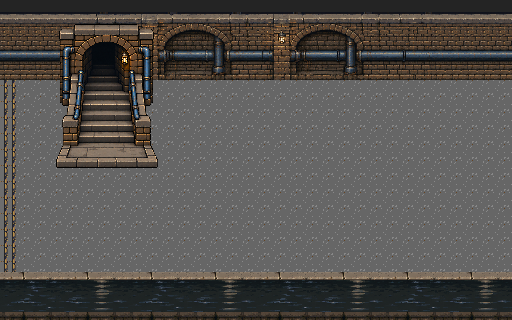
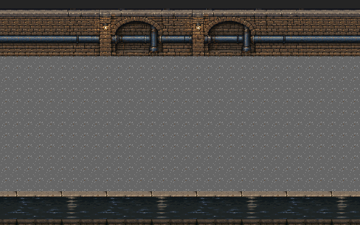
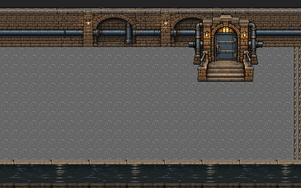
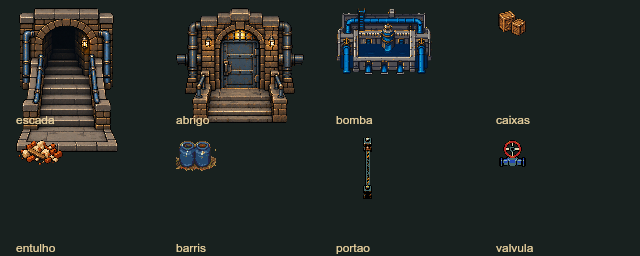
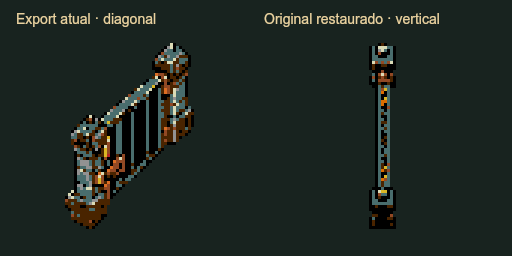

PLAGUEFALL · PROPOSTA VISUAL PARA A FASE 6
Entrada dos esgotos → galeria → Último Chão
Três imagens de base de 512×320 px, com o meio repetido quatro vezes. A mesma arquitetura sustenta a escolta da 6A e o percurso com válvulas e portões da 6B. Objetos separados variam os desvios.
Integração disponível no jogo. Abrir ROM, capturas e testes atuais da fase6. Esta página conserva o estudo anterior à integração; suas contagens e observações pertencem àquela etapa.
A → B → B → B → B → C3.072×320 pxEstudo visual de origem
Os três blocos completos
A · Entrada dos esgotos

Escada de serviço e espaço seguro para iniciar a escolta. O acesso aparece uma única vez.B · Galeria repetível

Arcos, tubulação e canal contínuos. As bordas ficam livres para encaixar B em outro B.C · Acesso ao abrigo

Porta reforçada, iluminação e degraus identificam a chegada. A favela será revelada na fase 7.Explorar a câmera
Recorte ilustrativo de 320×224 px com a faixa de 24 px do HUD. Damião e Dinorah usam os sprites existentes para comparar escala e circulação. A câmera e a rota ainda serão ajustadas no motor.
As cinco emendas da base
Comparação em tamanho nativo de A/B, B/B e B/C. Todas reproduzem a mesma junção de materiais. A checagem de pixels confirma a montagem; a leitura visual continua sendo parte da avaliação.
Objetos separados
Escada, acesso ao abrigo e equipamento de manutenção têm silhuetas completas. Caixas, entulho, barris, válvula e portão reutilizam referências do jogo. A posição de cada grupo muda a passagem sem alterar o bloco repetível.

Portão vertical restaurado
A versão vertical já criada estava preservada no primeiro conjunto de correções. O exportado atual vinha de outra revisão, em diagonal. A prévia agora usa a fonte vertical original e seu alinhamento por quadro, com os apoios norte e sul no mesmo eixo.

As seis poses foram recuperadas do material existente. A correção foi aplicada à representação visual; o exportado compartilhado e a ROM ainda conservam a revisão diagonal.
Investigação e origem dos arquivos · Seis quadros recuperados
Revisão da proposta
Conferidos o panorama completo, as cinco emendas e as vistas de entrada, meio, chegada e limite inferior. A rota de cada variante foi calculada com base física de 16×16 e margem adicional de 8 px; na 6B a conexão completa considera os portões abertos. O perigo de pressão e os pontos de espera precisam de teste no jogo.
Esta é uma representação visual. A versão de 16 cores permite revisar a adaptação de cor, mas o atlas completo ainda excede a reserva residente de cenário. A integração exigirá otimização ou carregamento por trecho; não há medição nova de FPS nem alteração na ROM.
| Montagem na paleta de 16 cores | Tiles distintos no panorama |
|---|
| 6A · composição completa | |
| 6B · imagem com mecanismos fechados | |
Contagem com reutilização de inversões H/V, da imagem estática inteira; não representa ocupação simultânea de VRAM. A 6B reserva ainda 256 tiles para as animações dos mecanismos no motor.
Composição, rota e contagens ·
Guia de produção ·
Prompt da galeriaOrigem das imagens
Arte criada com imagegen e montada por canvas. A primeira escada foi substituída por uma versão frontal para corrigir a perspectiva. Os materiais de ligação e o piso são compartilhados; a paleta de comparação é a dos esgotos existentes. Os prompts estão salvos na pasta prompts.